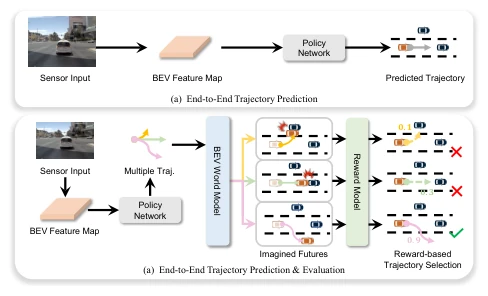
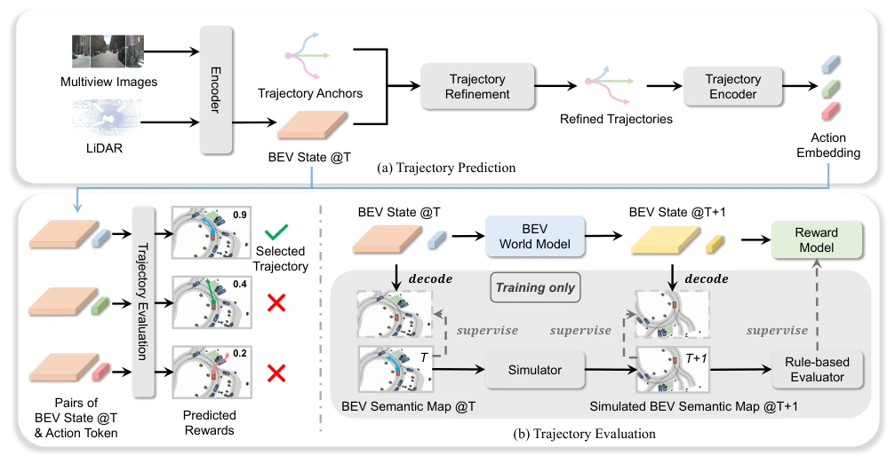
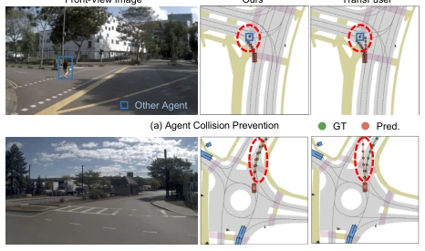
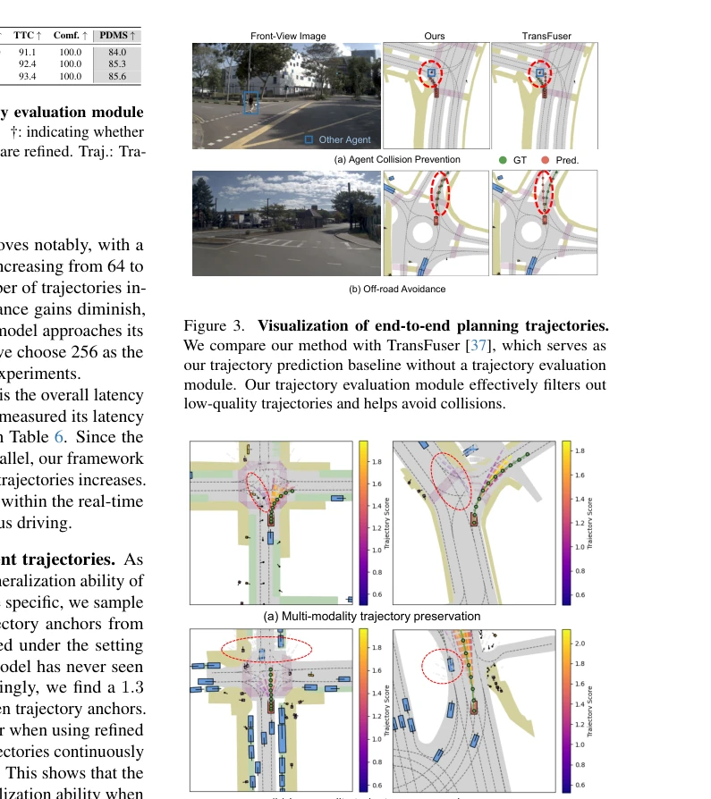

WoTE 这活儿干得挺漂亮，把世界模型从耗时的图像空间挪到了紧凑的 BEV 空间，专门用来给端到端驾驶的轨迹“验毒”。以往 E2E 方法像 [31] 的 Hydra-MDP 虽然能多模态预测，但评估往往只看当下，缺乏对未来的想象力，容易出事故。这论文直接上 BEV World Model 预演未来，再打分选最优，算是给 E2E 加了个“后悔药”。虽然依赖模拟器监督这点在真车上可能水土不服，但在 NAVSIM 和 Bench2Drive 上确实刷了榜，延迟也压到了 18ms，算是把“想象”和“实时”平衡得不错。就是不知道换了真车传感器噪声大点，这 BEV 世界模型会不会“幻觉”成车祸现场，毕竟它得靠模拟器来教它怎么想象未来，真车上的分布外情况可能让它懵圈。
WoTE performs this task admirably, shifting the world model from time-consuming image space to compact BEV space, specifically designed to 'validate safety' of end-to-end driving trajectories. Previous E2E methods like Hydra-MDP [31], while capable of multimodal prediction, often evaluate only the present, lacking foresight for the future, making accidents prone. This paper directly employs a BEV World Model to pre-simulate the future, then scores and selects the optimal, effectively adding a 'reversal mechanism' to E2E. Although relying on simulator supervision may not adapt well to real-world vehicles, it indeed topped the leaderboard on NAVSIM and Bench2Drive, with latency compressed to 18ms, balancing 'imagination' and 'real-time' quite well. However, it remains uncertain whether, with increased sensor noise on real cars, this BEV World Model might 'hallucinate' into a crash scenario, as it relies on simulators to learn how to imagine the future; out-of-distribution situations on real cars may confuse it.
The core pain point of end-to-end autonomous driving lies in the 'daring to drive' aspect. Existing methods mostly focus on generating high-quality trajectories, such as TransFuser [37], but lack effective online trajectory evaluation mechanisms to ensure safety. Traditional rule-based evaluation [10, 13] relies on perception results, is sensitive to perception errors and difficult to optimize end-to-end. Recent E2E methods [7, 31], although introducing evaluation, are mostly based on the current state, lacking prediction of future consequences, akin to driving without looking in the rearview mirror. Furthermore, existing world models [20, 46] mostly predict images, with slow inference and difficulty in supervising multiple future states. Therefore, there is an urgent need for an efficient, supervised BEV space world model to improve the safety and reliability of E2E systems by pre-simulating trajectory consequences, addressing the 'short-sighted' issue of current evaluation modules.
方法Method
WoTE 框架分为轨迹预测与评估两部分。首先，BEV Encoder 将多模态输入转为 BEV 特征图，通过 K-Means 生成轨迹锚点并细化得到多候选轨迹。核心创新在于 BEV World Model，它接收当前 BEV 状态与候选轨迹，递归预测未来 K 步的 BEV 状态，相比图像世界模型更轻量。随后，Reward Model 结合当前与未来 BEV 状态预测奖励，奖励包含模仿奖励（基于专家轨迹）和仿真奖励（基于规则如碰撞、通行区域）。训练时，利用 nuPlan 等模拟器生成 BEV 语义图作为状态监督，规则评估器生成仿真奖励作为目标，实现端到端优化。最终选择奖励最高的轨迹作为输出，实现了基于未来想象的在线评估。此外，该方法还采用了 BEV 空间监督策略，解决了多未来状态难以在真实数据中获取的问题，使得模型能同时学习多种可能的未来演化路径，并使用 BCE 和 Focal Loss 分别监督奖励和状态。
The WoTE framework is divided into two parts: trajectory prediction and evaluation. First, the BEV Encoder converts multi-modal input into BEV feature maps, generates trajectory anchors via K-Means and refines them to obtain multiple candidate trajectories. The core innovation lies in the BEV World Model, which receives the current BEV state and candidate trajectories, recursively predicting BEV states for future K steps, being more lightweight compared to image world models. Subsequently, the Reward Model predicts rewards combining current and future BEV states; rewards include imitation rewards (based on expert trajectories) and simulation rewards (based on rules such as collision, drivable areas). During training, simulators like nuPlan are utilized to generate BEV semantic maps as state supervision, while rule evaluators generate simulation rewards as targets, achieving end-to-end optimization. Finally, the trajectory with the highest reward is selected as output, realizing online evaluation based on future imagination. Furthermore, this method adopts a BEV space supervision strategy, solving the problem of difficulty in acquiring multiple future states in real data, enabling the model to learn multiple possible future evolution paths simultaneously, and uses BCE and Focal Loss to supervise rewards and states respectively.

Figure 1. The illustration of end-to-end trajectory evaluation with BEV world model. (a) Previous end-to-end driving methods primarily focus on learning a high-quality trajectory. (b) Our WoTE consists of end-to-end trajectory prediction and evaluation. First, we predict multi-modal trajectories. Next, given these trajectories, we leverage the BEV world model to predict the corresponding future BEV states. The reward model evaluates these trajectories based on the predicted states and assigns rewards, selecting the highest-reward trajectory.

Figure 2. Overall structure of WoTE. Our model predicts and evaluates trajectory in an end-to-end manner. It is mainly divided into two parts. (a) Trajectory Prediction: the BEV encoder encodes the multi-modal observations into a BEV feature map (state) and proposes multiple trajectory candidates. (b) Trajectory Evaluation: Given the current BEV state and trajectory candidates, we leverage the BEV World Model to predict the corresponding future BEV states of these trajectories. The Reward Model then predicts rewards with the help of future BEV states. The trajectory with the highest reward is selected as the final trajectory.
On the NAVSIM test set, WoTE's PDMS reaches 88.3, superior to Hydra-MDP [31]'s 86.5. On the CARLA Bench2Drive closed-loop benchmark, the Driving Score is 61.71 and the success rate is 31.36%, both superior to baselines such as UniAD [23]. Ablation experiments indicate that introducing future state prediction significantly improves various metrics, and imitation rewards complement simulation rewards. Latency tests show that even with the trajectory count increased to 256, inference latency is only 18.7ms, satisfying real-time requirements. Visualization results also confirm that this module can effectively suppress low-quality trajectories and avoid collisions, demonstrating good generalization ability. Additionally, increasing the trajectory count from 64 to 256 yields obvious performance improvement, but returns diminish thereafter, indicating 256 is the optimal cost-performance solution.

Figure 3. Visualization of end-to-end planning trajectories. We compare our method with TransFuser [37], which serves as our trajectory prediction baseline without a trajectory evaluation module. Our trajectory evaluation module effectively filters out low-quality trajectories and helps avoid collisions.

Figure 4. Visualization of rewards of all trajectories. Brighter colors indicate higher trajectory rewards, while gray trajectories correspond to those with very low rewards. (a): WoTE effectively retains diverse multi-modal trajectories, as long as they comply with traffic rules and do not result in unsafe outcomes. (b): it demonstrates that trajectories considered unreasonable receive sig- nificantly lower rewards, highlighting the effectiveness of our tra- jectory evaluation module.